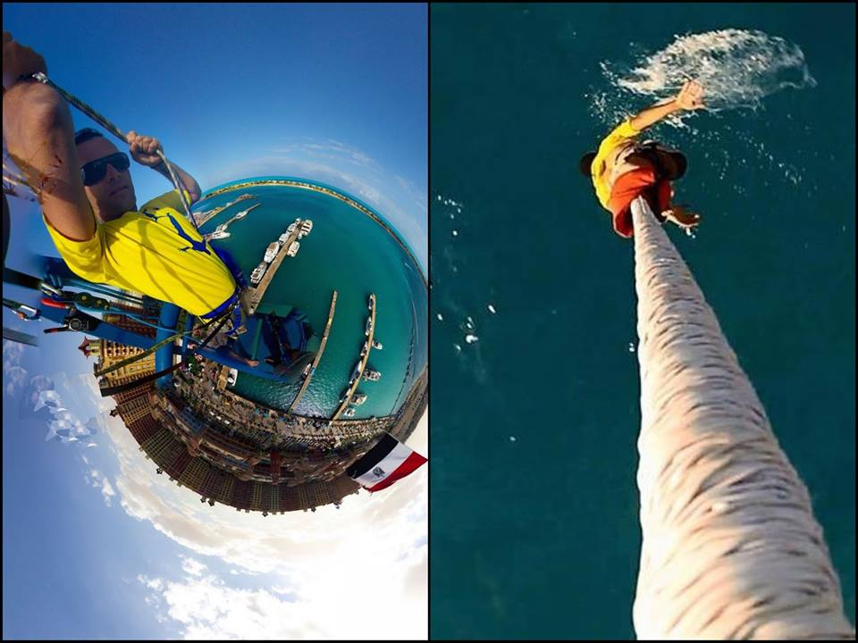
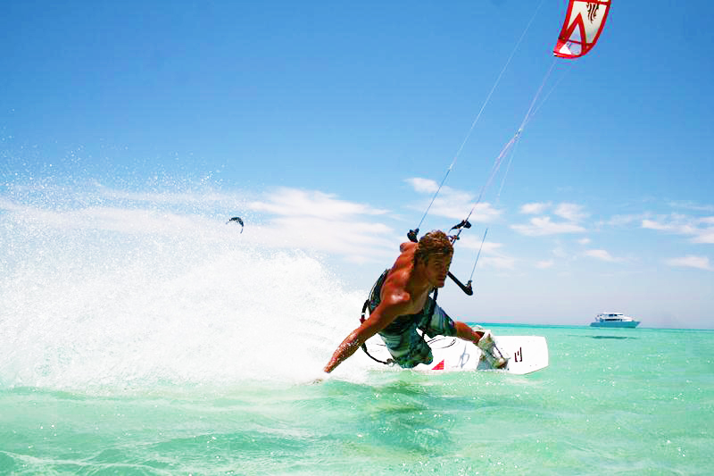
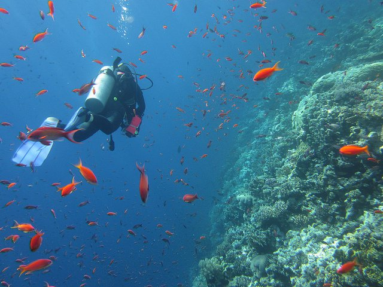
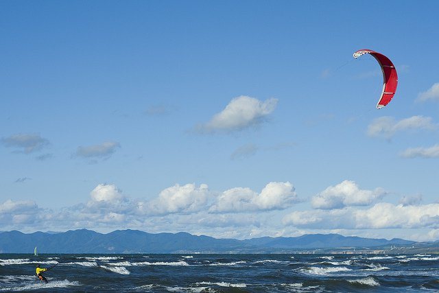

- Bungy Jump 
- Kitesurf 
- Diving & Wreck Diving 
- Kite-Surfing 
- Sand-Boarding
Get up to the hanging bridge over the blue coastal. They will tie you to the elastic rope and then you are ready to fly. Don’t worry, take a deep breath and open your eyes wide. Jump while you are making your most creative scream. Feel the gravity while you enjoy the state of “set free”! Touch the sea and feel alive again. This will be the one of most adrenaline rush experience of your life! To try this activity you can check the websitebungyegypt for more information.
Egypt is one of the best destinations to try kitesurfing, with several amazing places like Ras Sudr, El Gouna and Hurghada. The wind is always suitable and not dangerous for this activity and professional instructors can teach you how to surf in 3 days only! Not only that, but the kitesurfing centers provide a great discount for Egyptians. We recommend the Kite Family at El Gouna Kitesurf
Egypt is without doubt one of the world’s best diving places and a haven to divers and snorkelers equally from all corners of the world, with colorful coral reefs, stunning marine life, mangroves and a mild water temperature all year long. Where: It is important to note that theoretical and confined dives can be done in Cairo, but to get certified open water dives -in the sea- are a must over the course of a weekend. The list of diving spots is endless, and their variety suits all levels of expertise.
Ras Sudr is a couple of hours drive from Cairo and currently the Kite-surfing hub, but this does not mean that you won’t find excellent schools elsewhere, you can go to Ein El-Sokhna, Marsa Alam, Dahab, you name it. where:Ras Sudr: Kiteloop, Fly, Moonbeach, Fin & Dagger, Kitesurfing Village, & Soul

Yeah, you don’t have to go to Siwa or the remotest area in Egypt to enjoy surfing on sandy dunes, only few kilometers from central Cairo El-Qataneyah Dunes is the place to enjoy sand-boarding. You can pick from a selection of dunes. high, low or intermediate. You can also enjoy it in Fayoum. Where: Qataneya Dunes near 6th of October in Cairo, or Qousour El-Arab in Fayoum